Vijf gebieden en twee verbonden werkplaatsen in Formulewerf. De screenshots tonen een schone gastvoortgang. Klik op een afbeelding om het originele PNG-bestand te bekijken.
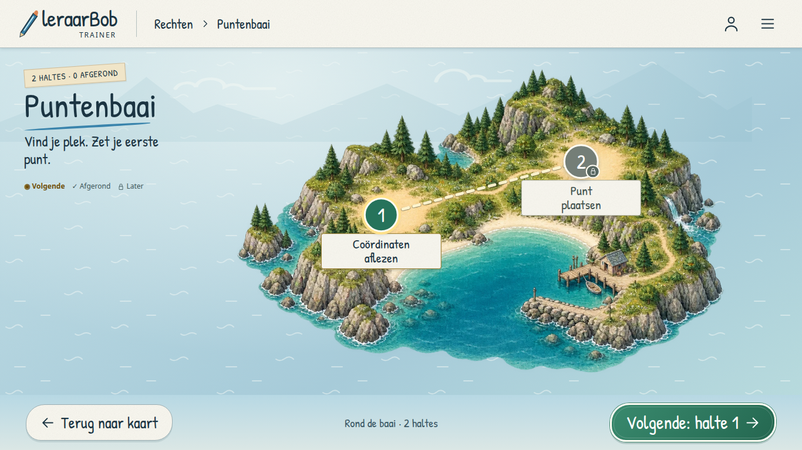
Open screenshot op volledig formaat ↗
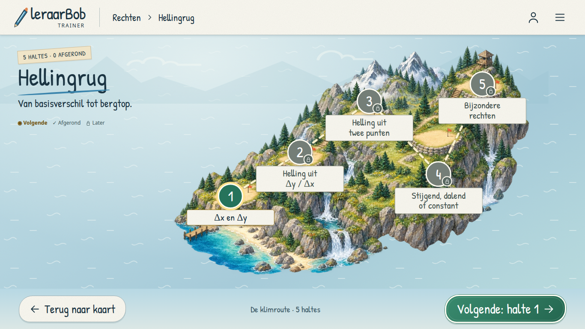
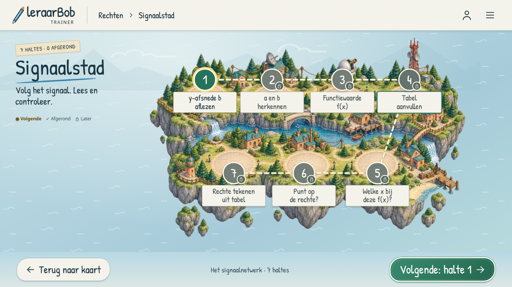
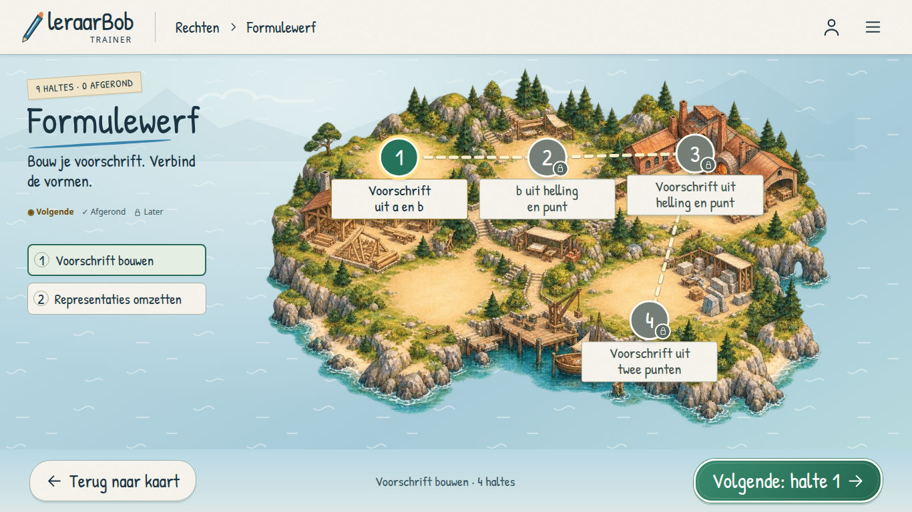
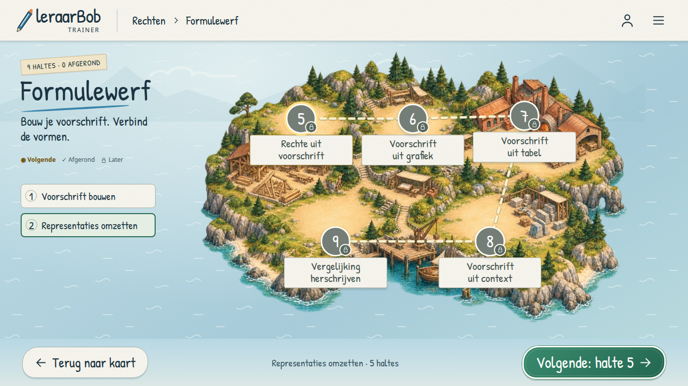
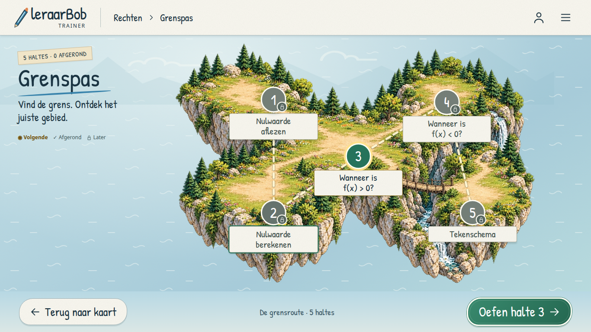
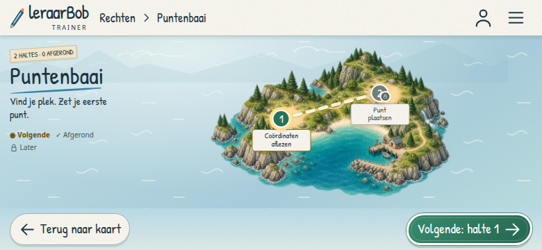
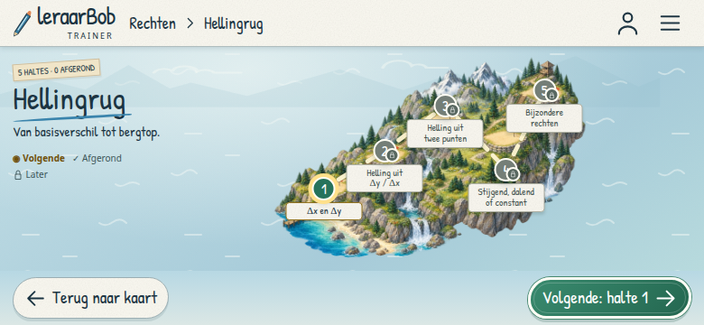
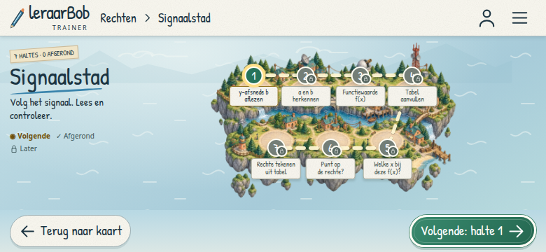
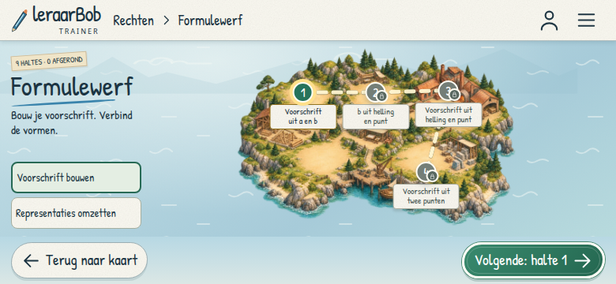
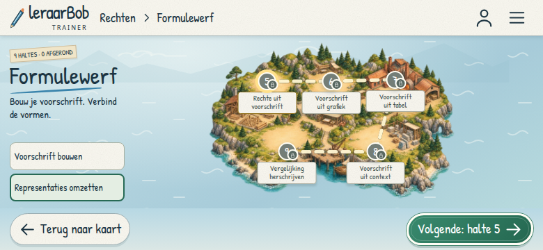
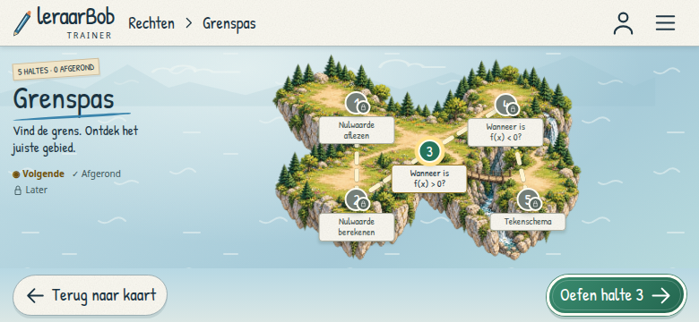